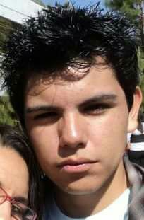

I was born in Mexico City in September 1987 and grew up in Morelos; nowadays I live in Tepatitlán de Morelos, Jalisco México which is crowded of beautiful ladies. While leaving in Morelos, I studied Software Engineering at the UPEMOR and now I'm an intern at a very prestigious company, Blue Trail Software. My family is really cool, my mom and dad are really young and I have a beautiful Biotechnology Engineer as a sister. I'm a single father of a gorgeous little kitten "Michita". I really love what I do, I enjoy solving challenging problems and develop software.
I'm eddy velazquez I am mechatronic engineer I have a master of science degree in electronics, I love the design of PCB's and CAD, robotics and programming, playing with new technologies is my biggest hobby I would love to learn more about artificial intelligence and big data. I usually play basketball and FPS video games, I am treh crew's and wocom-labs's founder.
I was born on a cold, dark nigth in November 27th in Cuernavaca, Morelos. I still live in Morelos in a small town called Xochitepec, and I went to school at UAEM. I live with my dad, Héctor; my brother, Dylan; my grand mother Tere; my dog Morrison and my cats Venus and Cecilia. Also I have a sister called Angie but she lives with my mama in Cuernavaca.
I was born on July 17, 1987 in Tepatitlan de Morelos, Jalisco, I studied Computer Engineering at CUALTOS. I am married to Erik Rodríguez, we have a beautiful daughter named Alexa Lizeth, I like web programming, I'm not a very logical person but I'm doing everything I can to be part of BTS.
Nací el 21 de noviembre de 1991 en Parral, Chihuahua y estudié en Ingeniería en Software en la UACH. De grande quiero ser graffitera como Banksy. Me sé muchos nombres modelos pero hasta ahorita no me ha servido para nada. Me molesta mucho que no haya un emoji con cabello rizado.
I live in Tepatitlán, Jalisco. I studied in CUAltos from 2011 to December 2015. I like mexican music and interact with mates.
I was born on 9th August 1992 in a little town called Arandas, Jalisco. I've studied Computer Engineering in Centro Universitario de los Altos of Universidad de Guadalajara. Since i was a little kid, my parents introduced me to the wonderful world of football, that's because i'm a big fan of the sport, and i love to play it. I've played in amateur teams since i was four years old and at this point, although i can't play it, 'cause a lung sickness, i'm still a big fan, i like another sports too, but football for me is the greatest. Another things that i like a lot, is play videogames, i haven't played them since too much time, but playing videogames it's great :), another thing that i like too much is play the guitar an sign along, i really really enjoy music and i like it a lot.

I'm Gerardo Ruiz Santana. I was born on july 12, 1993 in Guadalajara, Jalisco. I studied Computer Engineering in U de G CUALTOS. Now, I'm living in Tepa and I'm working on BTS. I like to play videogames and go out with friends.
Was born on 06 March 1990, he lives in Soltepec Puebla Mexico, he studied "Ingenieria En Ciencias De La Computacion" in BUAP (Benemerita Universidad Autonoma De Puebla). He likes to play Football Soccer, Programing and play "Billar". Actually he lives in Tepatitlan Jalisco.